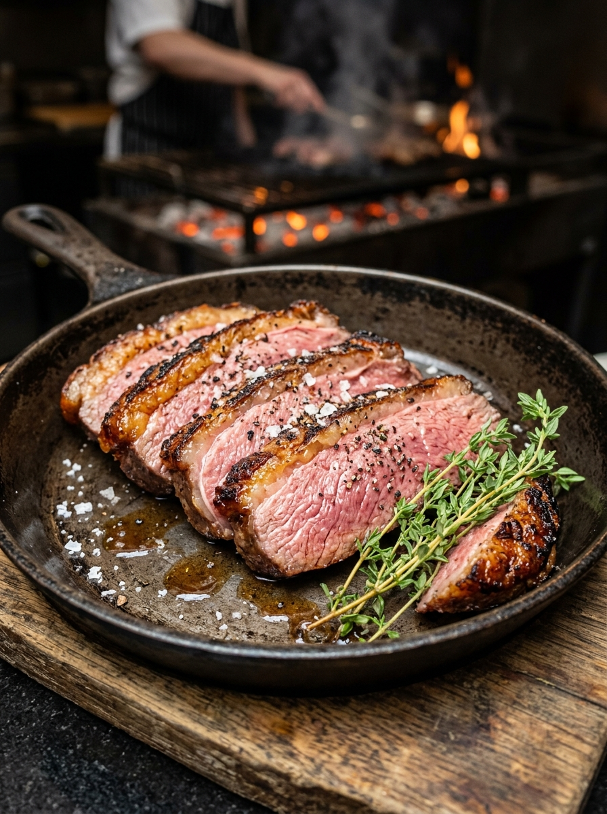

Ensaio fotográfico
12 fotos · 0 selecionadas
Marque com o selo azul para escolher as suas.
Marque o selo azul para selecionar e avançar à próxima
Ao confirmar, as 0 fotos marcadas com o selo azul serão enviadas para a Vilma e a galeria será encerrada.
Depois de enviar não é possível mudar a escolha nem desmarcar fotos.
Suas fotos foram enviadas para a Vilma. A galeria está encerrada.